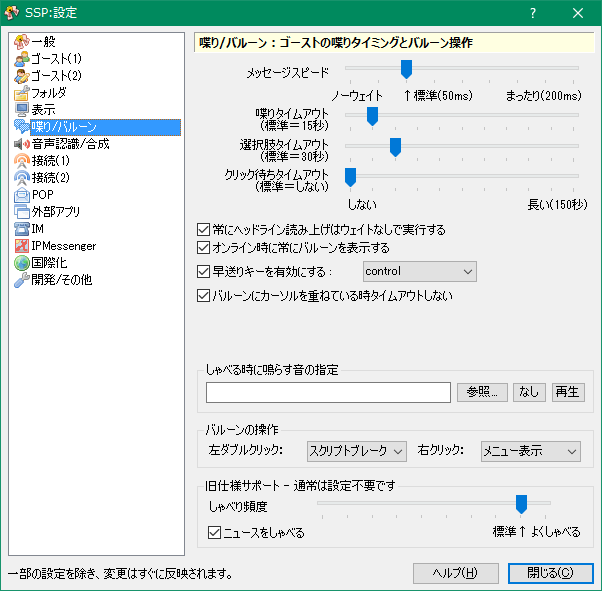

設定：喋り/バルーン
画像左側のリストをクリックすると、それぞれの解説ページへ移動します。

このページでは右クリックメニューの「設定」サブメニューにある項目「本体設定」で開くダイアログの、「喋り/バルーン」ページについて解説しています。
各項目の解説
- メッセージスピード
-
喋り等を表示するスピードです。1文字ずつ表示していく間の待ち時間を設定します。
通常はゴースト側でも各自ウェイトを制御しているため、全てのゴーストが同じ速度で喋るようにはなりません。 - 喋りタイムアウト/選択肢タイムアウト/クリック待ちタイムアウト
- それぞれ通常喋り・選択肢表示時にどれだけの時間が経てばバルーンを自動的に閉じるか、およびクリック待ち時にどれだけの時間が経てばクリックを待たずに読み進めるかを設定します。
- 常にヘッドライン読み上げはウェイトなしで実行する
-
ヘッドラインセンサの読み上げ文は長いので、これを設定しておくと、強制的に早送り指定で実行します。
特に問題がない限り設定しておくことをおすすめします。 - オンライン時に常にバルーンを表示する
-
オンライン時に、ブレーク操作やオンライン状態の確認のために常にメイン側バルーンを表示します。
特に問題がない限り設定しておくことをおすすめします。 - 早送りキーを有効にする
- これを有効にし、キーの種類を設定することで、設定したキーを押している間はスクリプトの再生を早送り（ウェイトを無視）することができます。
- バルーンにカーソルを重ねている時タイムアウトしない
-
操作中などで、マウスカーソルが吹き出し内にある時には、一定時間経過で自動的にバルーンを消去する処理を無効にします。
ただし、ゴースト側で意図的に時間制限が設定されている場合はこの設定が無視されることがあります。
しゃべる時に鳴らす音の指定
何か吹き出しに表示される時に、音を慣らします。
喋りを見逃したくない場合に、音声ファイルを指定しておくと良いでしょう。
バルーンの操作
吹き出しのマウスでの操作方法をカスタマイズできます。
従来的な動作は左ダブルクリックでスクリプトブレーク、右クリックでバルーン左右切替です。
- 何もしない
- 何もしません。
- 左クリックと同じ
- 左シングルクリックと同じ扱いにします。
- スクリプトブレーク
-
スクリプトの表示を中断し、バルーンを閉じます。
ただし選択肢表示中など、閉じられない場合があります。 - バルーン左右切替
-
バルーンの方向を左右で切替えます。
なお、通常バルーンが画面横から出そうになった場合は自動で左右が切り替わります。 - バルーン位置調整
-
バルーンの位置調整モードに入ります。
バルーンを左クリックをするまでの間、バルーンがカーソルに追従するようになります。
普通のバルーンのドラッグ操作と同じですが、ドラッグがうまく行かないような環境で利用できます。 - メニュー表示
- 毎回どのような動作をするかメニューから選ぶようにします。
旧仕様サポート
ふるいゴーストを使用する場合に設定が必要な項目です。
- しゃべり頻度
-
自発的に喋ってくれる頻度を調節します。
多くのゴーストは喋るタイミングをゴースト側で管理するため、無効です。 - ニュースをしゃべる
-
ニュース機能（最新情報等を順繰りに読んでくれる機能）を使うかどうかを設定します。
通常、ONのままで問題ありません。
また、旧仕様のため、すでにサポート対象外です。
下部のボタン
- ヘルプ
-
本体設定ダイアログの、設定中のページのヘルプ（つまりこのページ）を開きます。
ダイアログ右上の「？」マークも同様です。 - 閉じる
-
本体設定ダイアログを閉じます。
ダイアログ右上の「×」マークも同様です。